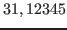

La chaîne de contrôle dans diverses fonctions standards des bibliothèques de programmation d'UNIX est une suite de symboles définissant le formatage de la sortie des arguments. Quelques unes de ces fonctions sont :
Ces codes de contrôle sont aussi utilisés dans "awk" et "perl"17.1
Une chaîne de contrôle contient deux types d'objets :
Les symboles de formatage sont de la forme "%[-][m][.n]a"
avec :
| Symbole | Description |
% |
introduit un symbole de formatage. |
- |
oblige le cadrage à gauche (par défaut à droite) du champ affiché. |
| m | spécifie la largeur minimum du champ. |
| n | spécifie le nombre maximum de caractères à afficher dans la chaîne correspondante, ou bien le nombre de décimales à afficher pour la valeur numérique correspondante. |
| a | désigne le type d'argument correspondant. |
Les différents codes possibles pour désigner le type d'arguments sont :
| Symbole | Description |
| s | désigne une chaîne de caractères. |
| c | désigne un caractère. |
| f | désigne une valeur réelle (virgule flottante). |
| d | désigne une valeur décimale. |
Exemple 17..1 :
Exemple d'utilisation des codes de format :
Si la variable "cumul" est égale à "" alors :
Chaîne de contrôle Affichage %f31.12345%10.2f31.12%-10.3f31.123
Si la variable "nom" contient la chaîne "schmoll", alors :
Chaîne de contrôle Affichage %sschmoll%10sschmoll%10.3ssch%-10.3ssch%.3ssch